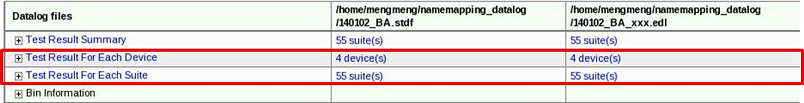
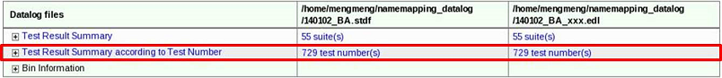

Preference page on Compare Datalog Files
Enables you to configure the parameters to generate a specific comparison data log report.
There are three groups of configurations:
- Setup components for test result comparison report:
For the mean, stdev, cp, cpk, yield, min, max and value for each device entries, you can modify the difference limit.
For the low limit, up limit and test number, you can control whether to highlight in report.
You can also control whether to display the difference percentage.
- Options of report generation:
If you select the generation of test results for each device, the content illustrated in the red rectangle below is added to the report:

If you select the generation of test results according to test number, the content in the red rectangle below is added to the report.

- Options of name mapping file generation:
If you select the generation of the name mapping file according to test number, test items with the same test number are put in the same row in the name mapping file.
If you choose to hide same items in name mapping file, test items with same suite name and test name are hidden in the name mapping file.
Functional changes
- Introduced in SmarTest 7.3.2